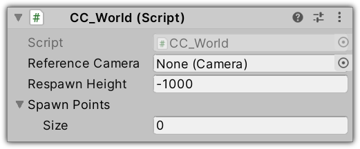

SDK Components
CC_World
Each world requires this component.

Reference Camera: The camera used to configure the post-processing effects of your world. Assign to this field the camera where you have added the Post-process Volume and the Post-process Layer components.
Respawn Height: If an avatar falls below the ground plane, it will respawn automatically once it falls below the specified height.
Spawn Points: The spawn points used to place the avatar in the world. The actual spawn point is randomly chosen.
CC_Grabbable
Add this component to objects you want to be able to be picked-up.